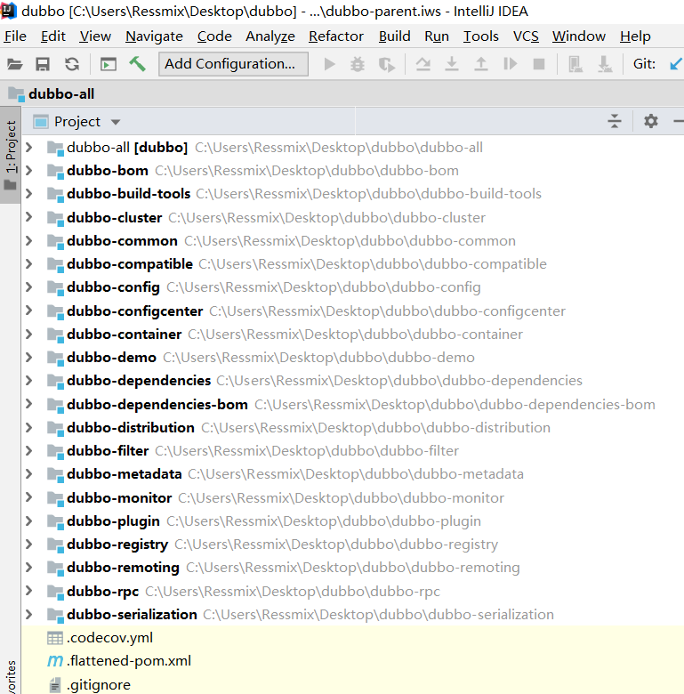
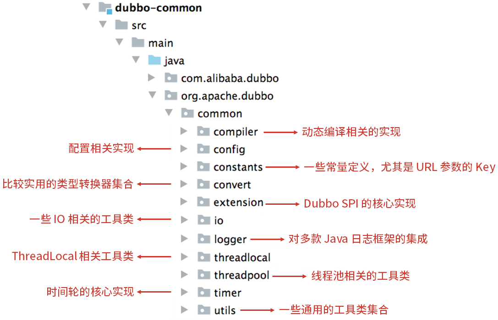
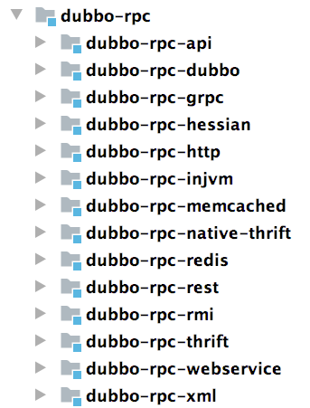
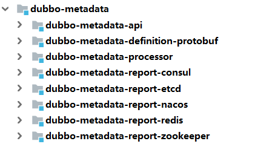
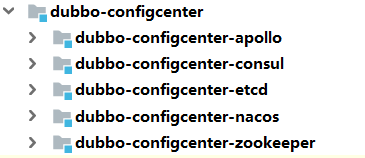

透彻理解Apache Dubbo（一）——整体架构
可扩展，分布式系统的一个基本要求。业务系统在从单体架构向集群架构演进的过程中，需要通过负载均衡技术，将流量尽可能均摊到集群中的每台机器上，以此克服单台机器硬件资源的限制，做到横向扩展。
Apache Dubbo就是一款高性能、轻量级的开源 Java RPC 框架，提供了以下核心能力：
- 面向接口的远程方法调用；
- 可靠、智能的容错和负载均衡；
- 服务自动注册和发现能力。
从本系列开始，我将对阿里巴巴开源的这款分布式RPC框架进行深入分析，具体来说，我会：
- 首先，我会从整体到局部的方式，介绍Dubbo的整体架构、核心知识点；
- 接着，我会自底向上剖析 Dubbo 源码，深入分析 Dubbo 的工作原理及核心实现；
- 在此期间，我会实现一个RPC框架的demo，帮助大家更好的理解。
Apache Dubbo 目前刚刚发布了3.0 Preview版本，还没有被业界公司运用，所以，本系列我基于Dubbo 2.7.7 版本对其源码进行分析。RPC 框架的核心原理和设计都是相通的，阅读过 Dubbo 2.X源码之后，你再去阅读3.X版本或其他 RPC 框架的代码，就是触类旁通而已。
一、整体架构
我们先来看看Dubbo的基本架构：

Registry：注册中心。 负责服务注册与查找，服务提供者 Provider 和服务消费者 Consumer 只在启动时与注册中心交互。注册中心通过长连接感知 Provider 的存在，当 Provider 宕机时，注册中心会立即推送相关事件通知 Consumer；
Provider：服务提供者。 启动时，会向 Registry 进行注册，将自己的服务地址和配置信息封装成 URL 添加到 ZooKeeper 中；
Consumer：服务消费者。 启动时，会向 Registry 进行订阅操作。订阅操作会从注册中心获取 Provider 注册的 URL，并在注册中心中添加相应的监听器。获取到 Provider URL 之后，Consumer 会根据负载均衡算法从多个 Provider 中选择一个并与其建立连接，最后发起对 Provider 的 RPC 调用。 如果 Provider URL 发生变更，Consumer 将会通过之前订阅过程中在注册中心添加的监听器，获取到最新的 Provider URL 信息，进行相应的调整，比如断开与宕机 Provider 的连接，并与新的 Provider 建立连接。Consumer 与 Provider 建立的是长连接，且 Consumer 会缓存 Provider 信息，所以一旦连接建立，即使注册中心宕机，也不会影响已运行的 Provider 和 Consumer；
Monitor：监控中心。 用于统计服务的调用次数和调用时间。Provider 和 Consumer 在运行过程中，会在内存中统计调用次数和调用时间，每分钟发送一次统计数据到监控中心。监控中心并不是必要角色，宕机只会丢失监控数据而已。
1.1 连通性
- 注册中心负责服务地址的注册与查找，相当于目录服务，服务提供者和消费者只在启动时与注册中心交互，注册中心不转发请求，压力较小；
- 监控中心负责统计各服务调用次数，调用时间等，统计先在内存汇总后每分钟一次发送到监控中心服务器，并以报表展示；
- 服务提供者向注册中心注册其提供的服务，并汇报调用时间到监控中心，此时间不包含网络开销；
- 服务消费者向注册中心获取服务提供者地址列表，并根据负载算法直接调用提供者，同时汇报调用时间到监控中心，此时间包含网络开销；
- 注册中心，服务提供者，服务消费者三者之间均为长连接，监控中心除外；
- 注册中心通过长连接感知服务提供者的存在，服务提供者宕机，注册中心将立即推送事件通知消费者；
- 注册中心和监控中心全部宕机，不影响已运行的提供者和消费者，消费者在本地缓存了提供者列表；
- 注册中心和监控中心都是可选的，服务消费者可以直连服务提供者。
1.2 高可用
- 监控中心宕掉不影响使用，只是丢失部分采样数据；
- 注册中心对等集群，任意一台宕掉后，将自动切换到另一台；
- 注册中心全部宕掉后，服务提供者和服务消费者仍能通过本地缓存通讯；
- 服务提供者无状态，任意一台宕掉后，不影响使用；
- 服务提供者全部宕掉后，服务消费者应用将无法使用，并无限次重连等待服务提供者恢复。
1.3 可扩展
- 注册中心为对等集群，可动态增加机器部署实例，所有客户端将自动发现新的注册中心；
- 服务提供者无状态，可动态增加机器部署实例，注册中心将推送新的服务提供者信息给消费者。
关于Apache Dubbo的整体架构我不作其它赘述了，因为本专栏并不是讲解Dubbo的入门使用，关于这方面的内容，建议读者直接参考Apache Dubbo的官方文档：https://dubbo.apache.org/zh/docsv2.7/user/preface/architecture/。
二、源码环境
本节，我先搭建好Dubbo的源码环境，为后续源码阅读作铺垫。
首先，clone代码并切换到2.7.7分支：
git clone https://github.com/apache/dubbo.git
git checkout -b dubbo-2.7.7 dubbo-2.7.7
接着，执行Maven命令进行编译：
mvn clean -Dmaven.test.skip=true install
然后，执行下面的命令转换成 IDEA 项目：
mvn idea:idea
最后，使用Intellij Idea导入工程：

2.1 模块说明
我对上述Dubbo源码工程的几个核心模块进行说明：
dubbo-common： 公共模块。包含很多工具类以及公共逻辑，例如Dubbo SPI 实现、时间轮、动态编译器等；
dubbo-remoting： 远程通信模块。其中的子模块依赖各种开源组件实现远程通信。在 dubbo-remoting-api 子模块中定义该模块的抽象概念，在其他子模块中依赖其他开源组件进行实现，例如dubbo-remoting-netty 子模块依赖 Netty 实现远程通信，dubbo-remoting-zookeeper 通过 Apache Curator 实现与 ZooKeeper 集群的交互；
dubbo-rpc： 远程调用协议模块。其中抽象了各种协议，依赖于 dubbo-remoting 模块的远程调用功能。dubbo-rpc-api 子模块是核心抽象，其他子模块是针对具体协议的实现，例如，dubbo-rpc-dubbo 子模块是对 Dubbo 协议的实现，依赖了 dubbo-remoting-netty 等 dubbo-remoting 子模块。 dubbo-rpc 模块的实现中只包含一对一的调用，不关心集群的相关内容；

dubbo-cluster： 集群管理模块。提供了负载均衡、容错、路由等一系列集群相关的功能，最终的目的是将多个 Provider 伪装为一个 Provider，这样 Consumer 就可以像调用一个 Provider 那样调用 Provider 集群了；
dubbo-registry： 注册中心模块。提供了注册中心的能力。其中， dubbo-registry-api 子模块是顶层抽象，其他子模块是针对具体开源注册中心组件的具体实现，例如，dubbo-registry-zookeeper 子模块是 Dubbo 接入 ZooKeeper 的具体实现；

dubbo-monitor ： 监控模块。用于统计服务调用次数、调用时长以及实现调用链跟踪的服务；
dubbo-config： 配置模块。dubbo-config-api 子模块负责处理 API 方式使用时的相关配置，dubbo-config-spring 子模块负责处理与 Spring 集成使用时的相关配置方式。有了 dubbo-config 模块，用户只需要了解 Dubbo 配置的规则即可，无须了解 Dubbo 内部的细节；
dubbo-metadata： 元数据模块；
dubbo-configcenter： 配置中心模块。负责从配置中心动态获取配置，以及服务治理规则的存储与通知，提供了多个子模块用来接入多种开源配置中心；

2.2 源码示例
Dubbo 源码中的dubbo-demo模块，有三个Dubbo 示例项目：
- 使用Spring XML 配置的 Demo 示例；
- 使用 Spring 注解配置的 Demo 示例；
- 使用 非Spring 项目 的 Demo 示例。
接着来，我结合这三个示例，介绍 Dubbo 的基本使用。同时，将这三个项目作为后续分析和Debug Dubbo 源码的入口。
上述的
dubbo-demo-interface定义了服务提供方的接口存根。
dubbo-demo-xml
dubbo-demo-xml工程展示了如何通过Spring XML配置来使用Dubbo。
服务提供方
我们先来看服务提供方的使用，示例定义在子模块dubbo-demo-xml-provider中：
public class Application {
public static void main(String[] args) throws Exception {
// 启动一个Spring容器
ClassPathXmlApplicationContext context = new ClassPathXmlApplicationContext("spring/dubbo-provider.xml");
context.start();
System.in.read();
}
}
Spring容器启动后，会去classpath加载dubbo配置文件dubbo-provider.xml：
<beans xmlns:xsi="http://www.w3.org/2001/XMLSchema-instance"
xmlns:dubbo="http://dubbo.apache.org/schema/dubbo"
xmlns="http://www.springframework.org/schema/beans"
xsi:schemaLocation="http://www.springframework.org/schema/beans http://www.springframework.org/schema/beans/spring-beans-4.3.xsd
http://dubbo.apache.org/schema/dubbo http://dubbo.apache.org/schema/dubbo/dubbo.xsd">
<dubbo:application metadata-type="remote" name="demo-provider"/>
<!-- 注册中心配置 -->
<dubbo:metadata-report address="zookeeper://127.0.0.1:2181"/>
<dubbo:registry address="zookeeper://127.0.0.1:2181"/>
<!-- 请求协议配置 -->
<dubbo:protocol name="dubbo"/>
<!-- 服务提供方定义 -->
<bean id="demoService" class="org.apache.dubbo.demo.provider.DemoServiceImpl"/>
<dubbo:service interface="org.apache.dubbo.demo.DemoService" ref="demoService"/>
</beans>
上面定义了一个DemoService服务提供方，并注入了Spring容器：
public interface DemoService {
String sayHello(String name);
}
@Service // 注意，这个是Dubbo的注解：org.apache.dubbo.config.annotation.Service
public class DemoServiceImpl implements DemoService {
private static final Logger logger = LoggerFactory.getLogger(DemoServiceImpl.class);
@Override
public String sayHello(String name) {
logger.info("Hello " + name + ", request from consumer: " + RpcContext.getContext().getRemoteAddress());
return "Hello " + name + ", response from provider: " + RpcContext.getContext().getLocalAddress();
}
}
服务消费方
再来看服务消费方的使用，示例定义在子模块dubbo-demo-xml-consumer中：
public class Application {
public static void main(String[] args) throws Exception {
// 启动一个Spring容器
ClassPathXmlApplicationContext context = new ClassPathXmlApplicationContext("spring/dubbo-consumer.xml");
context.start();
// RPC调用
DemoService demoService = context.getBean("demoService", DemoService.class);
CompletableFuture<String> hello = demoService.sayHelloAsync("world");
System.out.println("result: " + hello.get());
}
}
Spring容器启动后，会去classpath加载dubbo配置文件dubbo-consumer.xml：
<beans xmlns:xsi="http://www.w3.org/2001/XMLSchema-instance"
xmlns:dubbo="http://dubbo.apache.org/schema/dubbo"
xmlns="http://www.springframework.org/schema/beans"
xsi:schemaLocation="http://www.springframework.org/schema/beans http://www.springframework.org/schema/beans/spring-beans-4.3.xsd
http://dubbo.apache.org/schema/dubbo http://dubbo.apache.org/schema/dubbo/dubbo.xsd">
<dubbo:application name="demo-consumer"/>
<!-- 注册中心配置 -->
<dubbo:registry address="zookeeper://127.0.0.1:2181"/>
<!-- 服务调用引用 -->
<dubbo:reference id="demoService" check="false" interface="org.apache.dubbo.demo.DemoService"/>
</beans>
dubbo-demo-annotation
dubbo-demo-annotation工程展示了如何通过Spring 注解来使用Dubbo。
服务提供方
我们先来看服务提供方的使用，示例定义在子模块dubbo-demo-annotation-provider中：
public class Application {
public static void main(String[] args) throws Exception {
// 启动一个Spring容器
AnnotationConfigApplicationContext context = new AnnotationConfigApplicationContext(ProviderConfiguration.class);
context.start();
System.in.read();
}
@Configuration
@EnableDubbo(scanBasePackages = "org.apache.dubbo.demo.provider")
@PropertySource("classpath:/spring/dubbo-provider.properties")
static class ProviderConfiguration {
@Bean
public RegistryConfig registryConfig() {
RegistryConfig registryConfig = new RegistryConfig();
registryConfig.setAddress("zookeeper://127.0.0.1:2181");
return registryConfig;
}
}
}
上述服务提供方应用启动后，会去扫描org.apache.dubbo.demo.provider包下的所有服务提供方，注入到容器中：
@Service
public class DemoServiceImpl implements DemoService {
private static final Logger logger = LoggerFactory.getLogger(DemoServiceImpl.class);
@Override
public String sayHello(String name) {
logger.info("Hello " + name + ", request from consumer: " + RpcContext.getContext().getRemoteAddress());
return "Hello " + name + ", response from provider: " + RpcContext.getContext().getLocalAddress();
}
}
dubbo-provider.properties定义了Dubbo的服务提供方配置：
dubbo.application.name=dubbo-demo-annotation-provider
dubbo.protocol.name=dubbo
dubbo.protocol.port=20880
服务消费方
再来看服务消费方的使用，示例定义在子模块dubbo-demo-annotation-consumer中：
public class Application {
public static void main(String[] args) {
// 启动一个Spring容器
AnnotationConfigApplicationContext context = new AnnotationConfigApplicationContext(ConsumerConfiguration.class);
context.start();
// 发起RPC调用
DemoService service = context.getBean("demoServiceComponent", DemoServiceComponent.class);
String hello = service.sayHello("world");
System.out.println("result :" + hello);
}
@Configuration
@EnableDubbo(scanBasePackages = "org.apache.dubbo.demo.consumer.comp")
@PropertySource("classpath:/spring/dubbo-consumer.properties")
@ComponentScan(value = {"org.apache.dubbo.demo.consumer.comp"})
static class ConsumerConfiguration {
}
}
上述服务消费方应用启动后，会去扫描org.apache.dubbo.demo.consumer.comp包下的所有服务消费方，注入到容器中：
@Component("demoServiceComponent")
public class DemoServiceComponent implements DemoService {
@Reference
private DemoService demoService;
@Override
public String sayHello(String name) {
return demoService.sayHello(name);
}
}
dubbo-consumer.properties定义了Dubbo的服务消费方配置：
dubbo.application.name=dubbo-demo-annotation-consumer
dubbo.registry.address=zookeeper://127.0.0.1:2181
dubbo-demo-api
dubbo-demo-api 工程展示了如何在那些未使用Spring框架的应用中，通过原生API的方式使用Dubbo。
服务提供方
我们先来看服务提供方的使用，示例定义在子模块dubbo-demo-api-provider中：
public class Application {
public static void main(String[] args) throws Exception {
startWithBootstrap();
}
private static void startWithBootstrap() {
ServiceConfig<DemoServiceImpl> service = new ServiceConfig<>();
service.setInterface(DemoService.class);
service.setRef(new DemoServiceImpl());
DubboBootstrap bootstrap = DubboBootstrap.getInstance();
bootstrap.application(new ApplicationConfig("dubbo-demo-api-provider"))
.registry(new RegistryConfig("zookeeper://127.0.0.1:2181"))
.service(service)
.start()
.await();
}
}
public class DemoServiceImpl implements DemoService {
private static final Logger logger = LoggerFactory.getLogger(DemoServiceImpl.class);
@Override
public String sayHello(String name) {
logger.info("Hello " + name + ", request from consumer: " + RpcContext.getContext().getRemoteAddress());
return "Hello " + name + ", response from provider: " + RpcContext.getContext().getLocalAddress();
}
}
服务消费方
再来看服务消费方的使用，示例定义在子模块dubbo-demo-api-consumer中：
public class Application {
public static void main(String[] args) {
runWithBootstrap();
}
private static void runWithBootstrap() {
ReferenceConfig<DemoService> reference = new ReferenceConfig<>();
reference.setInterface(DemoService.class);
reference.setGeneric("true");
DubboBootstrap bootstrap = DubboBootstrap.getInstance();
bootstrap.application(new ApplicationConfig("dubbo-demo-api-consumer"))
.registry(new RegistryConfig("zookeeper://127.0.0.1:2181"))
.reference(reference)
.start();
// 发起RPC调用
DemoService demoService = ReferenceConfigCache.getCache().get(reference);
String message = demoService.sayHello("dubbo");
System.out.println(message);
// 泛型调用
GenericService genericService = (GenericService) demoService;
Object genericInvokeResult = genericService.$invoke("sayHello", new String[] { String.class.getName() },
new Object[] { "dubbo generic invoke" });
System.out.println(genericInvokeResult);
}
}
三、总结
本章，我对Apache Dubbo的整体逻辑架构进行了简单分析，并搭建完了Dubbo源码研发环境，介绍了Dubbo的几种不同的使用方式。从下一章开始，我将对Dubbo的源码进行分析。